➤1.1 Componentes internos
↠1.1.1 CPU
→CPU é a sigla em inglês para Unidade Central de Processamento, o componente do computador que concentra todas as principais operações que permitem a seu PC, celular, tablet ou videogame a funcionar. Não é exagero, portanto, se referir à CPU como o “cérebro” desses dispositivos.
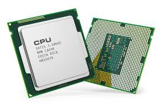↠1.1.2 Armazenamento
→O armazenamento de arquivos armazena dados em uma estrutura hierárquica de arquivos e pastas. Em ambientes de rede, o armazenamento baseado em arquivos geralmente usa uma tecnologia de rede conectada como armazenamento (NAS).
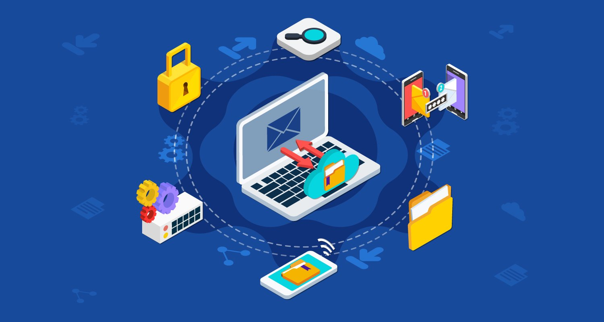↠1.1.3 Memória
→A memória do computador ou a memória de acesso aleatório (RAM) é o armazenamento de dados de curto prazo do sistema. Ela armazena as informações que o computador está usando ativamente para que elas possam ser acessadas rapidamente. Quanto mais programas o sistema executar, mais memória você precisará.
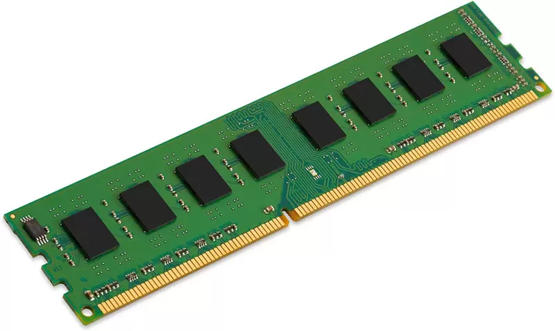↠1.1.4 Fonte de alimentação
→Uma unidade de fonte de alimentação converte a rede elétrica CA em energia CC regulada de baixa tensão para os componentes internos de um computador. Os computadores pessoais modernos usam universalmente fontes de alimentação comutadas.

➤1.2 Componentes externos
↠1.2.1 Teclado
→Na computação, o teclado de computador é um dispositivo que possui uma série de botões ou teclas, utilizado para inserir dados no computador. É um tipo de periférico de entrada utilizado pelo usuário para a entrada manual no sistema de dados e comandos.
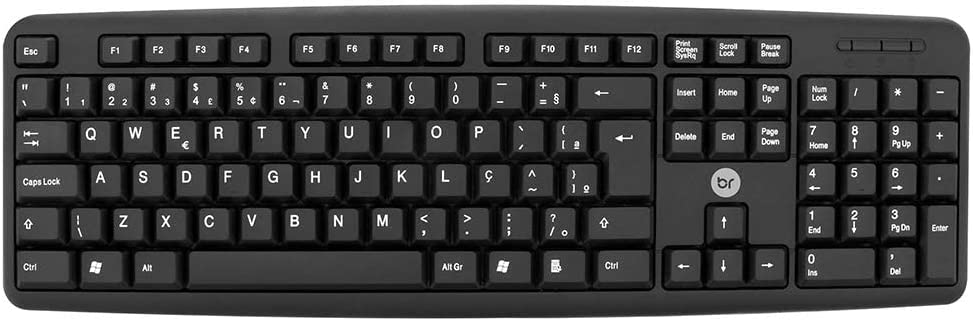↠1.2.2 Monitor de vídeo
→Um monitor é um dispositivo de saída do computador, cuja função é transmitir informação ao utilizador através da imagem.
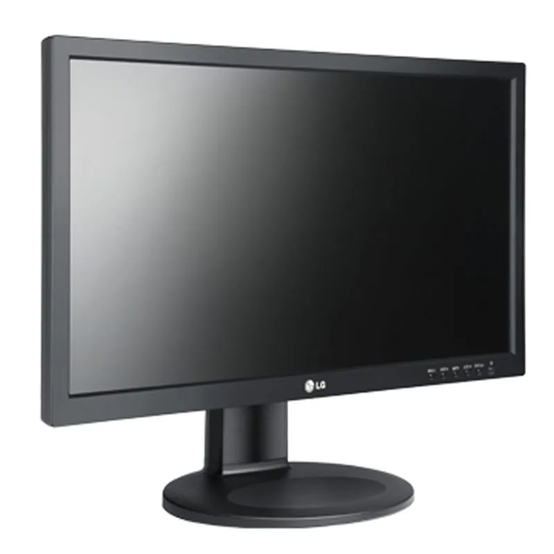↠1.2.3 Mouse
→Na tecnologia, o mouse ou rato é um periférico de entrada que junto ao teclado que auxilia no processo de entrada de dados em programas com interface gráfica criado pela empresa Xerox.
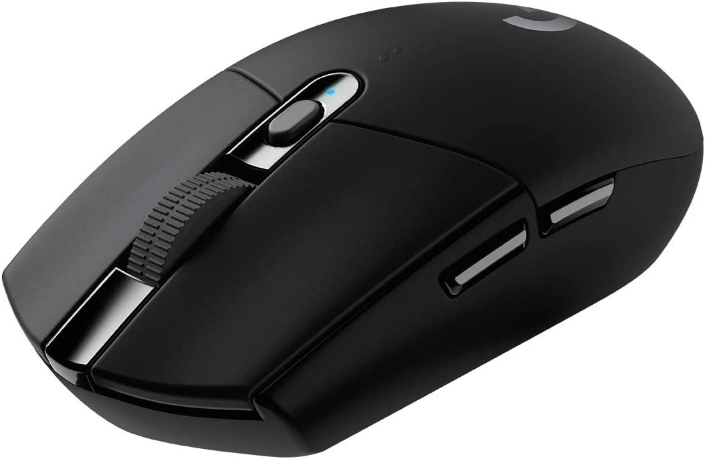↠1.2.4 Impressora
→Impressora ou dispositivo de impressão é um periférico que, quando conectado a um computador ou a uma rede de computadores, tem a função de dispositivo de saída, imprimindo textos, gráficos ou qualquer outro resultado de uma aplicação.

↠1.2.5 Plotter
→Um plotter ou Lutther é uma impressora destinada a imprimir desenhos em grandes dimensões, com elevada qualidade e rigor, como por exemplo mapas cartográficos, projectos de engenharia e grafismo.
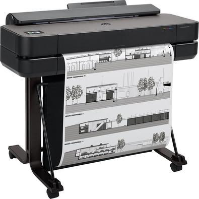↠1.2.6 Scanner
→Um scanner é um instrumento de captura, utilizado para digitalizar documentos, transformando documentos de papel em uma imagem digital. Além de facilitar a digitalização de documentos, o equipamento não tem um custo muito elevado.
↠1.2.7 Gabinete
→Na informática, o gabinete de computador, também conhecido como case, caixa, chassis, carcaça ou torre, é o compartimento que contém a maioria dos componentes de um computador. Um case de computador, às vezes, é referido metonimicamente como CPU, referindo-se a um componente situado dentro da caixa.
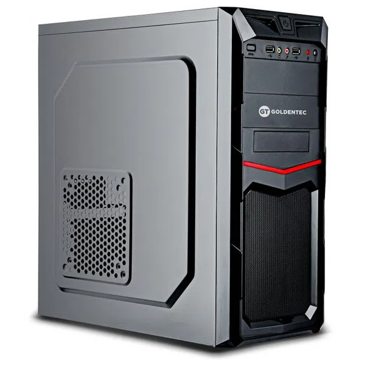↠1.2.8 Web Cam
→Webcam ou câmera web é uma câmera de vídeo de baixo custo que capta imagens e que as transfere para um computador. Pode ser usada para videoconferência, monitoramento de ambientes, produção de vídeo e imagens para edição, entre outras aplicações.
↠1.2.9 Caixas de som
→Caixas de som para PC são acessórios importantes para quem gosta de jogar, assistir filmes ou ouvir músicas no computador. No Brasil, marcas como Multilaser, Redragon e HP oferecem desde opções mais simples, de entrada, até modelos mais avançados, focados no público gamer.
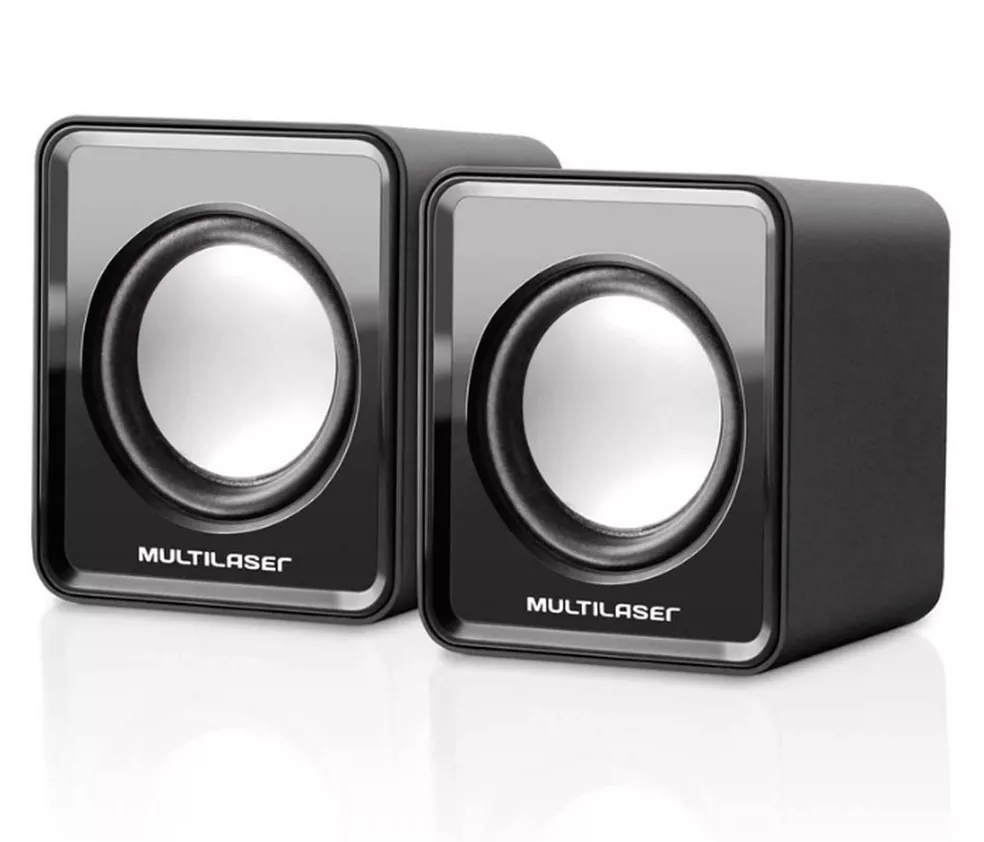↠1.2.10 Microfone
→Um Microfone Para Pc é um dispositivo que converte som em um sinal elétrico. Ele pode ser usado para gravar áudio ou para comunicação online através de programas como Skype, Google Hangouts e Yahoo Messenger.
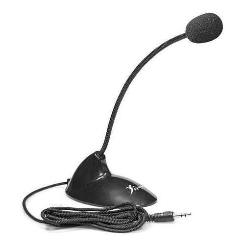↠ ] 1.2.11 Head Set
→Headset é um conjunto de fone de ouvido com controle de volume e microfone acoplado para uso em microcomputadores multimídia e também para telemarketing, ficando preso à cabeça do usuário.

➤1.3 Interfaces de entrada e saída
↠1.3.1 Interfaces sem fio
→A comunicação sem fio é um dos modos de conectividade mais desejados entre dois ou mais dispositivos. Nessa tecnologia, a comunicação de dados é realizada por meio de ondas eletromagnéticas, como frequências de rádio, infravermelho e satélite, ao invés de cabos e fios.
↠1.3.2 Áudio
→Áudio é um termo que vem do idioma inglês, embora seu antecedente etimológico mais distante seja encontrado no latim. O conceito de áudio é usado para nomear a técnica que permite gravar, transmitir e reproduzir sons.
↠1.3.3 Rede (Ethernet)
→A rede Ethernet cria um sistema de comunicação local interconectado por cabos, sejam coaxiais, trançados ou de fibra ótica, e equipamentos como roteadores e switches, que permitem o compartilhamento de dados e recursos, como impressoras, scanners ou dispositivos de todos os tipos.
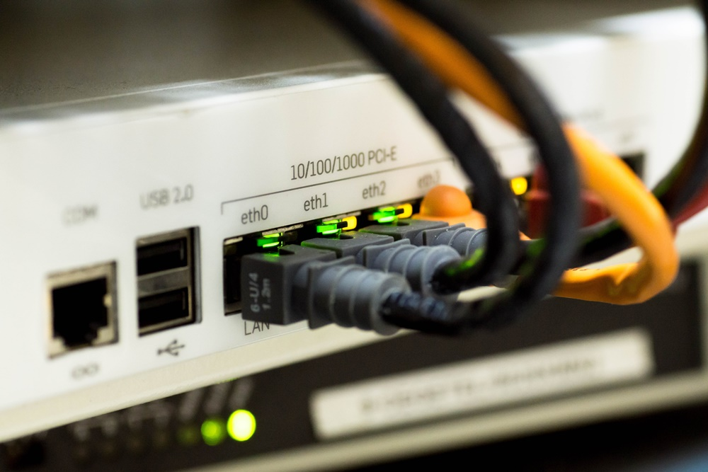↠1.3.4 VGA
→Video Graphics Array é um controlador de exibição de vídeo e padrão gráfico de computadores, introduzido pela primeira vez com a linha de computadores IBM PS/2 em 1987, que se tornou onipresente na indústria de PC em três anos.
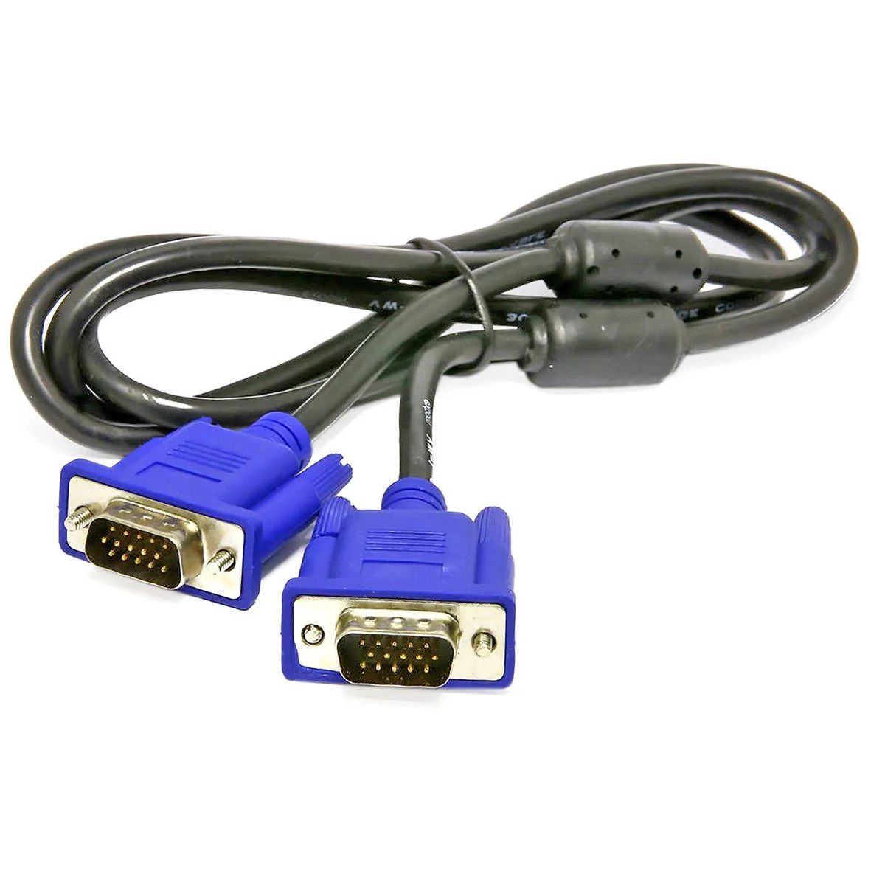↠1.3.5 HDMI
→High-Definition Multimedia Interface (HDMI) é uma interface digital que conduz áudio e vídeo entre equipamentos que trabalham com formato digital, capaz de transmitir dados não comprimidos, representando, por isso, uma alternativa melhorada aos padrões com formato analógico, tais como: Radio Frequência, Cabo coaxial, vídeo composto, S-Video, SCART, vídeo componente, Terminal D, e VGA.
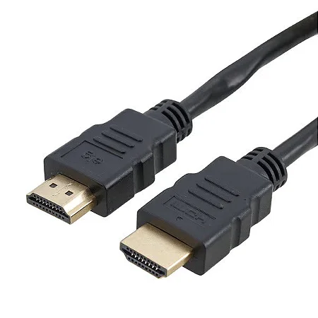↠1.3.6 USB
→Universal Serial Bus é um padrão da indústria que estabelece especificações para cabos, conectores e protocolos para conexão, comunicação e alimentação entre computadores, periféricos e outros computadores.
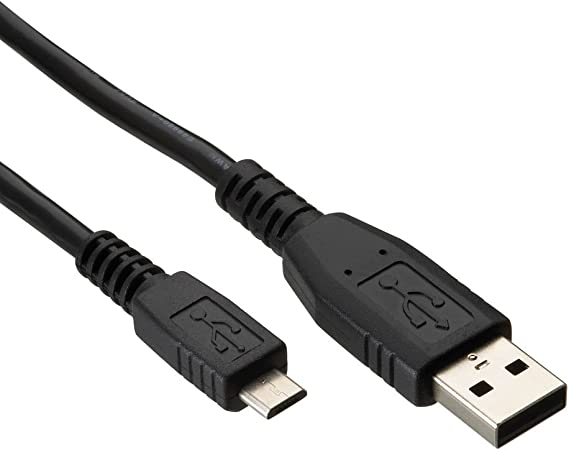